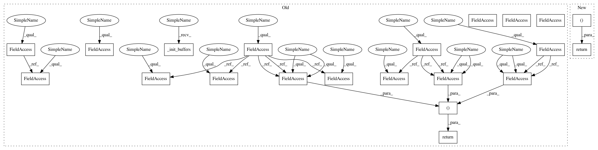

07eed27d9fa6f1feaf2d09ba25ff26a643e70b3a,fairseq/search.py,Sampling,step,#Sampling#Any#Any#Any#,233
Before Change
@torch.jit.export
def step(self, step: int, lprobs, scores):
self._init_buffers(lprobs)
bsz, beam_size, vocab_size = lprobs.size()
if step == 0:
// at the first step all hypotheses are equally likely, so use
// only the first beam
lprobs = lprobs[:, ::beam_size, :].contiguous()
if self.sampling_topp > 0:
// only sample from the smallest set of words whose cumulative probability mass exceeds p
probs, top_indices = self._sample_topp(lprobs)
elif self.sampling_topk > 0:
// only sample from top-k candidates
lprobs, top_indices = lprobs.topk(self.sampling_topk)
probs = lprobs.exp_()
else:
probs = lprobs.exp_()
// dummy data to be consistent with true branch for type check
top_indices = torch.empty(0)
// sample
if step == 0:
self.indices_buf.resize_(bsz, beam_size)
self.indices_buf = torch.multinomial(
probs.view(bsz, -1), beam_size, replacement=True,
).view(bsz, beam_size)
else:
self.indices_buf.resize_(bsz, beam_size)
self.indices_buf = torch.multinomial(
probs.view(bsz * beam_size, -1),
1,
replacement=True,
out=self.indices_buf,
).view(bsz, beam_size)
if step == 0:
// expand to beam size
probs = probs.expand(bsz, beam_size, -1)
// gather scores
self.scores_buf = torch.gather(
probs, dim=2, index=self.indices_buf.unsqueeze(-1)
)
self.scores_buf = self.scores_buf.log_().view(bsz, -1)
// remap indices if using top-k or top-P sampling
if self.sampling_topk > 0 or self.sampling_topp > 0:
self.indices_buf = torch.gather(
top_indices.expand(bsz, beam_size, -1),
dim=2,
index=self.indices_buf.unsqueeze(-1),
).squeeze(2)
if step == 0:
self.beams_buf = self.indices_buf.new_zeros(bsz, beam_size)
else:
self.beams_buf.resize_(beam_size)
self.beams_buf = torch.arange(0, beam_size).repeat(
bsz, 1
)
// make scores cumulative
self.scores_buf.add_(
torch.gather(scores[:, :, step - 1], dim=1, index=self.beams_buf)
)
return self.scores_buf, self.indices_buf, self.beams_buf
class DiverseSiblingsSearch(Search):
After Change
torch.gather(scores[:, :, step - 1], dim=1, index=beams_buf)
)
return scores_buf, indices_buf, beams_buf
class DiverseSiblingsSearch(Search):
In pattern: SUPERPATTERN
Frequency: 3
Non-data size: 21
Instances
Project Name: elbayadm/attn2d
Commit Name: 07eed27d9fa6f1feaf2d09ba25ff26a643e70b3a
Time: 2020-02-26
Author: myleott@fb.com
File Name: fairseq/search.py
Class Name: Sampling
Method Name: step
Project Name: elbayadm/attn2d
Commit Name: 07eed27d9fa6f1feaf2d09ba25ff26a643e70b3a
Time: 2020-02-26
Author: myleott@fb.com
File Name: fairseq/search.py
Class Name: DiverseBeamSearch
Method Name: step
Project Name: elbayadm/attn2d
Commit Name: 07eed27d9fa6f1feaf2d09ba25ff26a643e70b3a
Time: 2020-02-26
Author: myleott@fb.com
File Name: fairseq/search.py
Class Name: Sampling
Method Name: step